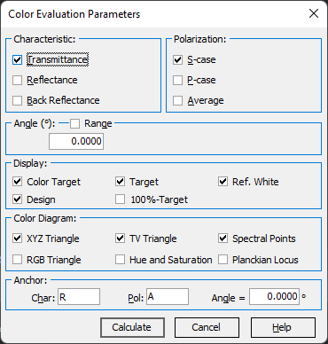

Color Evaluation Parameters
- Mark check boxes corresponding to the parameters to be used in
Color Evaluation procedure.

At least one characteristic type (Transmittance, Reflectance, Back Reflectance) and one state of polarization (S, P, A) should be chosen.
Angle is the angle of incidence which will be used in the Color Evaluation. Default values for the Color Evaluation correspond to the current target function.
Display group checkboxes allow the selection of Color Target, the current Model, colors computed based on the loaded Measurement, and Reference White for presentation in the
Color Coordinates window.
The settings in the Color Diagram frame correspond to the properties of the Color Diagram. Together with plotting all available colors in XY coordinates, you may add the following details to the diagram:
XYZ Triangle - to display the borders of the XYZ triangle;
RGB Triangle - to display the triangle of the RGB coordinate system;
TV Triangle - to display the triangle created by standard computer monitor colors;
Hue and Saturation - to display the lines of equal hue and saturation;
Spectral Points - to display the points corresponding to pure spectral colors (with a step of 5 nm);
Planckian Locus - to display the chromaticities of complete radiators (i.e., the radiation sources that obey Planck’s law) at different absolute temperatures (with a step of 500K).
Anchor settings are used for Color Difference evaluation based on CIE DE2000 formula.
Char, Pol and Angle parameters specify a Characteristic, Polarization, and Angle of Incidence for the color (anchor color) that will be used for comparison.
The Anchor Color is calculated for the same design.
To start the Color Evaluation procedure:
Press the Calculate button.
To cancel the Color Evaluation procedure:
Press the Cancel button.
To plot color characteristics corresponding to a given range of incident angles:
Activate the Range checkbox.
Please specify the minimum and maximum values of the angle of incidence and the number of evaluation points.